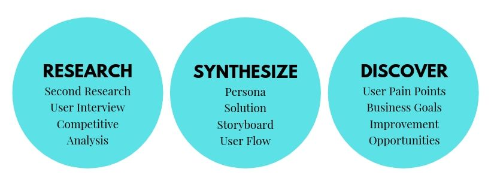
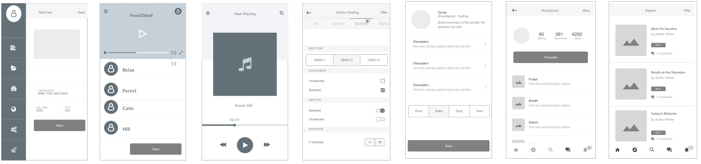

MediSky is a spa wellness company with a mission to improve health and happiness. MediSky strives to accomplish this goal by offering guided mediation, music, spa accessories via the MediSky mobile app.
This case study examines the research and discovery process that led to concept solutions to improve MediSky user experiences that have the potential to increase user-retention.
How can we maximize the insightful content while keeping a simple design for users to promote stronger user engagement and retention? Discover where the company left opportunities for improvement.
The goal of our research was to gain a better understanding of what subscribers want out of a wellness app and discover market trends that exist in the marketplaces MediSky competes within.
Analyzing feedback from wellness app users provides an outline of what the generic user looks like. We provided insights to help shape what a user's daily routine goals or pain points encountered within the app
The goal of our research was to gain a better understanding of what subscribers want out of a wellness app and discover market trends that exist in the marketplaces MediSky competes within. User and market research provided the following insights.
After conducting 10 selective user interviews, we built a collective list of trends mentioned throughout user interviews. The respondent selection was aimed at solely collecting feedback from current Wellness App users. We selected this cohort of users because we felt they would provide the most accurate insights as to what users want from a wellness application and where users become less engaged with an app in their customer lifecycle.
A father of 3 kids, he worked hard and fan of the meditation app user. However, He felt frustrated about searching his ideal music and accessories for meditation. He expressed his desire with the application's dynamic of content beyond the standard audio and visual narratives. He would often switch between different meditation apps and wanted to learn more about meditation and looked elsewhere for more content. He wanted to better understand the origins of meditation, learn about MediSky’s research experiments and findings accessories to enhance the quality of meditation practice. We needed to evaluate the company through user and market research to discover where the company left opportunities for improvement.
MediSky is well-liked because it offers a fun and simple experience that appeals to inexperienced users who want to learn meditation and build mindfulness habits. But what happens when inexperienced users become more advanced in practice and acquire mindfulness habits? If MediSky wants to retain subscribers and grow its market share, the company will need to adapt by creating meaningful experiences and catering to a wider range of wellness app users. User retention is a direct result of exceptional customer experience, the two are inherently linked. Retaining current subscribers should be a top priority.
After conducting 10 selective user interviews, we built a collective list of trends mentioned throughout user interviews. The respondent selection was aimed at solely collecting feedback from current Wellness App users. We selected this cohort of users because we felt they would provide the most accurate insights as to what users want from a wellness application and where users become less engaged with an app.
Analyzing feedback from wellness app users provides an outline of what the generic user looks like, as characterized below in the user persona. The above research also provides insights to help shape what a user's daily routine may look like and goals or pain points encountered within the app. A Persona is a research-based idea of what a "typical user" looks like. After collecting information about Headspace users, Jasmine Joslin, the busy professional and health-conscious mother was created.
Based on these wireframes and team collaboration, we created a task sequence based on the multiple proposed solutions that would highlight the new features and their integration with existing content. After performing usability testing on the initial designs, we gathered user feedback on overall functionality, design, and examined user's ability to complete tasks in the sequence prototype.
We incorporated the feedback we received and re-created several iterations of the designs and task sequence. The final prototype highlighted the new solutions and how their integration into the app would complement existing designs and user process flow.
We incorporated the feedback we received and re-created several iterations of the designs and task sequence. The final prototype highlighted the new solutions and how their integration into the app would complement existing designs and user process flow.